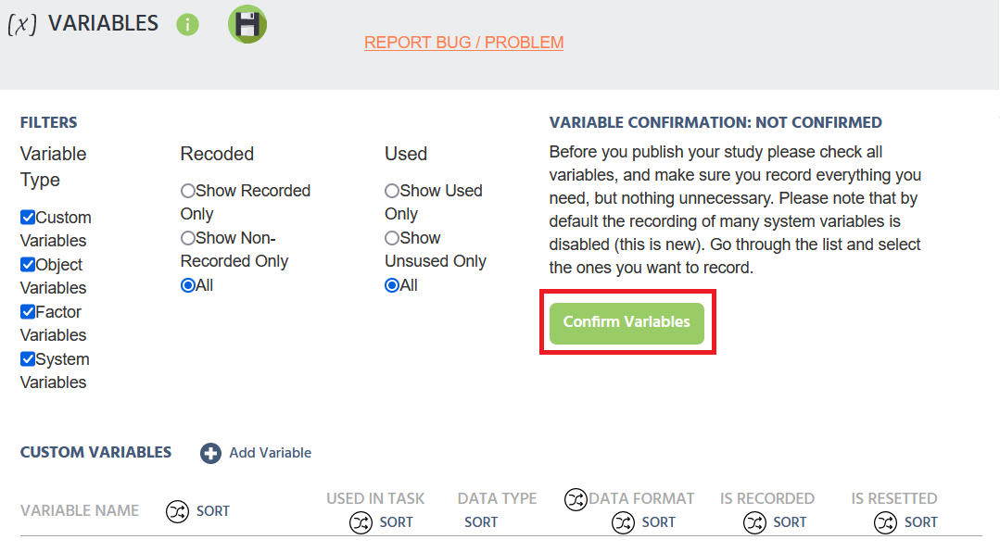

obraz persona5.png
obraz persona5.pngobraz persona5.png
Jego celem jest wykorzystanie Labvanced do nagrania internetowego badania na temat psychologii z udziałem ludzi. Używał innego oprogramowania badawczego online, ale jego wiedza komputerowa jest dość ograniczona. Chętnie się uczy, jest pewny swoich możliwości i nie jest zestresowany (jest psychologiem, więc wie, jak sobie z tym radzić).
Będzie korzystał z podręcznika użytkownika, który będzie dostępny na stronie internetowej uczelni i skierowany do pracowników uczelni, którzy muszą wiedzieć, jak korzystać z Labvanced, ale nie mają dużego doświadczenia/wiedzy z podobnym oprogramowaniem. Poszczególne kroki zostaną omówione w osobnych sekcjach.
Poniżej znajduje się sekcja dotycząca publikowania i rejestrowania badania w Labvanced.
Labvanced to platforma, na której możesz tworzyć eksperymenty online.
Z tego przewodnika dowiesz się, jak opublikować i zarejestrować stworzone przez siebie badanie.
Przejdź do strony internetowej Labvanced i zaloguj się W menu po lewej stronie kliknij Moje studia.
 obraz
obraz
Powinieneś zobaczyć listę swoich studiów Kliknij dwukrotnie badanie, które chcesz opublikować i zarejestrować. Następnie kliknij Publikuj i nagrywaj w menu po lewej stronie.
 obraz
obraz
Teraz powinieneś zobaczyć wymagania dotyczące publikowania i rejestrowania badania. Domyślnie projekt badania jest ważny, a Ty jesteś jego właścicielem. Aby spełnić wymagania, najpierw kliknij ikonę obok Opis: Brak słów kluczowych, brak przynależności.
 obraz
obraz
W tej sekcji musisz zrobić dwie rzeczy:
Tutaj możesz również ustawić minimalny i maksymalny czas trwania swojego badania oraz nadać mu opis. Nie jest to jednak obowiązkowe.
 obraz
obraz
Następnie wróć do sekcji Publikuj i nagrywaj Kliknij ikonę obok Sprawdzenie zmiennych: Nie potwierdzone.
Wszystko, co musisz tutaj zrobić, to kliknąć przycisk, aby potwierdzić zmienne.
obraz
Następnie jeszcze raz wróć do sekcji Publikuj i nagrywaj Kliknij ikonę obok Rejestracja danych: Nie włączony.
Tutaj kliknij przycisk, aby włączyć nagrywanie.
obraz
Następnie wróć do sekcji Publikuj i nagrywaj Kliknij przycisk, aby przejrzeć i opublikować swoje badanie.
 obraz
obraz
Powinieneś zobaczyć kreatora publikacji z trzema sekcjami. W sekcji Opcje rekrutacji możesz zdecydować, czy chcesz korzystać z ochrony hasłem w swoim badaniu.
obraz
Kliknij przycisk Dalej Teraz jesteś w sekcji Wybór licencji Tutaj musisz wybrać Użyj mojej aktualnej licencji: Licencja laboratorium/działu. Aby przeglądać inne opcje, możesz również kliknąć Poznaj więcej opcji licencji.
obraz
Kliknij przycisk Dalej Teraz jesteś w sekcji Potwierdź i opublikuj. Tutaj musisz zaakceptować wszystkie trzy warunki. Następnie kliknij przycisk Publikuj.
obraz
Opublikowałeś swoje badanie. Aby zaprosić uczestników do swojego badania, możesz skopiować i wysłać im link.
obraz
Zmienna - dowolny czynnik, którym można manipulować, kontrolować lub mierzyć w eksperymencie
Wizard - funkcja pomocy pakietu oprogramowania, która automatyzuje złożone zadania, zadając użytkownikowi serię łatwych pytań.
Samouczek dotyczący tworzenia przykładowego projektu badania w Labvanced